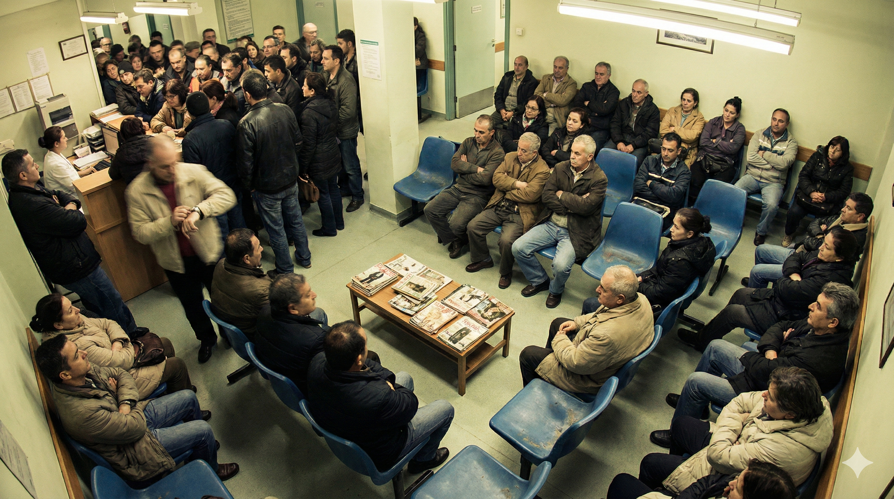
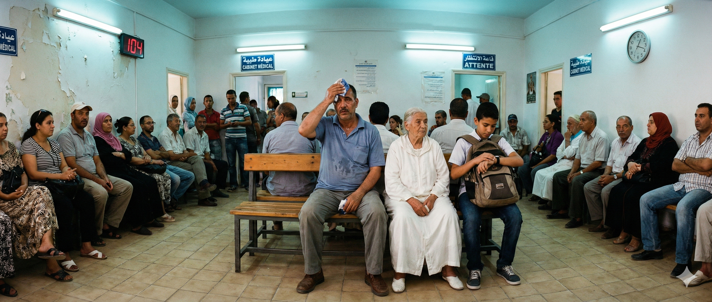
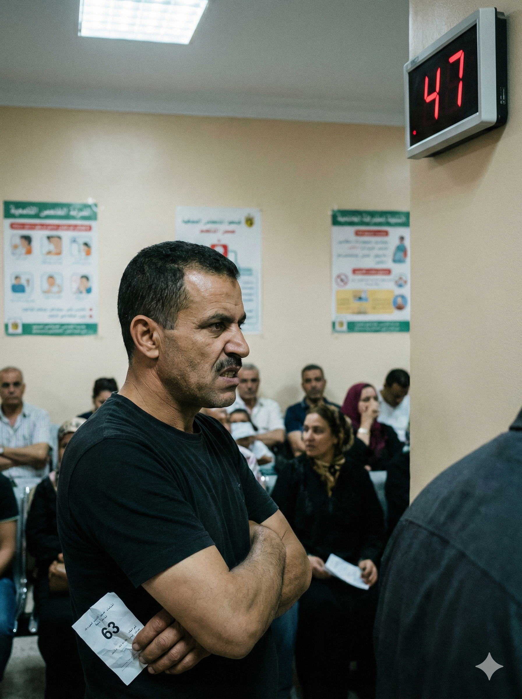
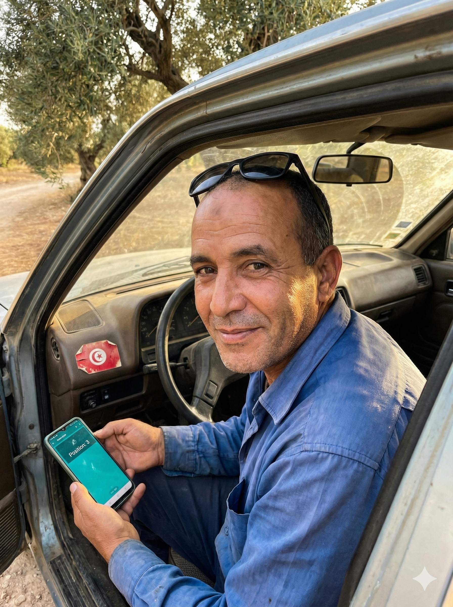
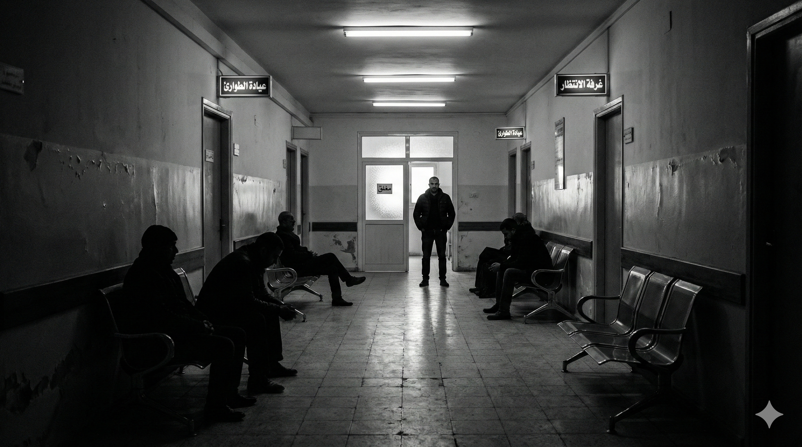
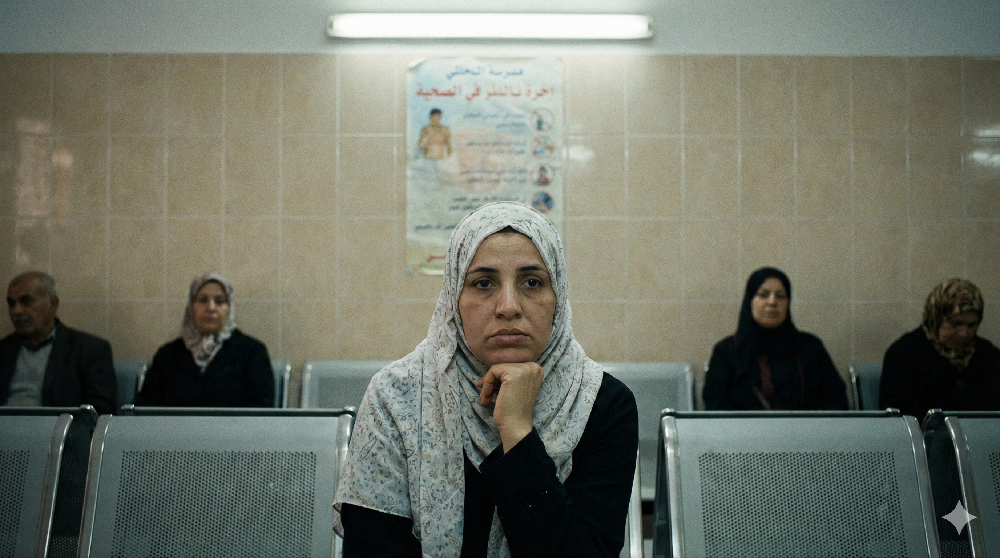
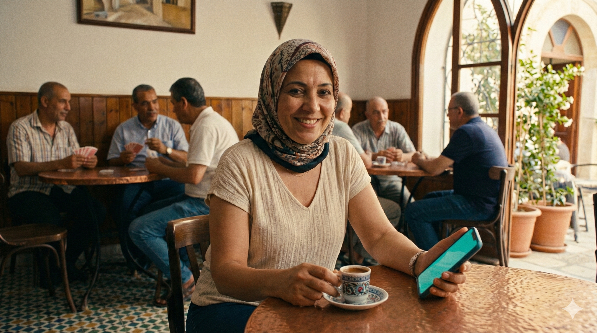

5 traitements visuels différents pour les mêmes photos tunisiennes. Chaque option exploite le contraste « Sans BleSaf / Avec BleSaf » d'une manière unique.
Deux réalités. Une seule solution.

Sans BleSaf Avec BleSafVos patients suivent leur position en temps réel depuis leur téléphone. Ils arrivent détendus, vous consultez sereinement.
Le reste de la landing page continue ici...

« C'est quand mon tour ? » — la question qui revient 100 fois par jour
Position en temps réel sur leur téléphone. Notification automatique quand c'est leur tour.
Un simple QR code à l'accueil transforme l'expérience d'attente
Pas d'app à télécharger. Vos patients scannent, suivent leur position, et arrivent détendus.
Le reste de la landing page continue ici...
La même matinée, deux expériences


File d'attente virtuelle, suivi en temps réel, notification automatique. Pas d'app à télécharger.
Le reste de la landing page continue ici...

BleSaf transforme l'expérience d'attente. QR code à l'accueil, suivi en temps réel, zéro stress.
Le reste de la landing page continue ici...


Même patiente, même matinée. La seule différence : un QR code à l'accueil.
Le reste de la landing page continue ici...